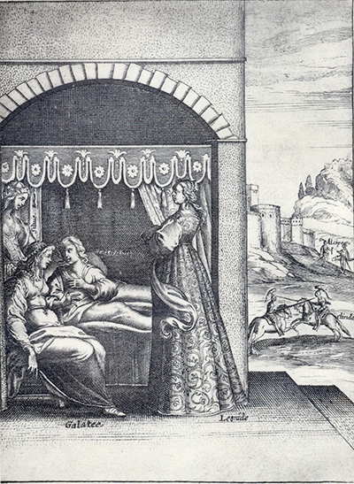
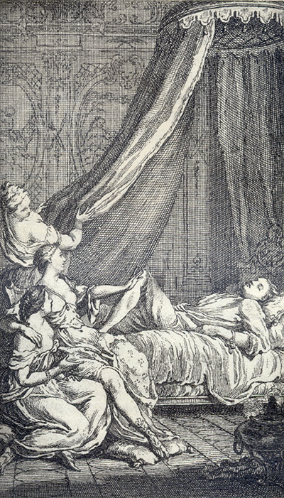

L'Astrée
d'Honoré d'Urfé
Première partie
Livre 2

Galathée, Léonide et Silvie écoutent Céladon raconter l'histoire d'Alcippe (I, 2, 33 recto)
Au second plan, Clindor se battant contre un cousin de Pimandre (I, 2, 41 verso)
Au fond, devant les murs d'Usson, Alcippe et Clindor libéré (I, 2, 42 recto)
L'AstréeI, 2. Édition Vaganay**, 1925Galathée, Léonide et Silvie écoutent Céladon raconter l'histoire d'Alcippe (I, 2, 33 recto)
Au second plan, Clindor se battant contre un cousin de Pimandre (I, 2, 41 verso)
Au fond, devant les murs d'Usson, Alcippe et Clindor libéré (I, 2, 42 recto)
(Voir Illustrations)

Les nymphes regardant Céladon endormi (I, 2, 21 verso)
L'AstréeI, 2. Édition Vaganay**, 1925Les nymphes regardant Céladon endormi (I, 2, 21 verso)
(Voir Illustrations)
Édition de 1607, 21 recto.
Édition de Vaganay, p. 35.
Histoire d'Alcippe
Sonnet
sur les contraintes de l'honneur
Votre opiniâtreté a surpassé la mienne, mais la
mienne aussi surmontera celle qui me contraint de vous
avertir que demain je pars, et qu'aujourd'hui, si
vous vous trouvez sur le chemin où nous nous
rencontrâmes avant-hier, et que votre Amour se puisse
contenter de parole, elle aura occasion de l'être, et
adieu.
Lorsqu'elle fut partie, et qu'il commença à bon escient de ressentir les déplaisirs de son absence,
allant bien souvent sur le même lieu où il avait pris
congé de sa Bergère, il y soupira plusieurs fois tels
vers :
Sonnet
Sur l'Absence
*Rivière de Lignon dont la course éternelle
Du gracieux Forez va le sein arrosant,
Et qui, flot dessus flot, ne te vas reposant
Que tu ne sois rentrée en l'onde paternelle,
Ne vois-tu point Allier, qui, ravissant ta belle,
Use comme outrageux des lois du plus puissant,
Et l'honneur, de tes bords loin de toi ravissant,
T'oblige d'entreprendre une juste querelle ?
Contre ce ravisseur appelle à ton secours
Ceux qui, pour son départ, répandent tous les jours
Les larmes que tu vois inonder ton rivage.
Ose-le seulement, et nos yeux et nos cœurs
Verseront pour t'aider mille fleuves de pleurs,
Qui ne se tariront qu'en vengeant ton outrage
.
η Mais, ne pouvant vivre sans la voir au même lieu où
il avait tant accoutumé le bien de sa vue, il se
résolut, comme que ce fût, de partir de là, et lorsqu'il en cherchait l'occasion, il s'en présenta une
toute telle qu'il l'eût su désirer. Peu auparavant,
la mère d'Amasis était morte, et on se préparait
dans la grande ville

Livre 1

Livre 3
Référence électronique :
document.write('"'+document.title.substr(0, document.title.indexOf("-")-1)+'". '+"Dernière mise à jour : "+ExtractDate(document.lastModified)+".")Deux visages de L'Astrée.
©2005-2020 E. Henein.
URL :
var today = new Date();
document.write(document.URL +
"<br>Consulté le : " + today.toLocaleDateString("fr-FR") + ".");
var _gaq = _gaq || [];
_gaq.push(['_setAccount', 'UA-19288475-1']);
_gaq.push(['_trackPageview']);
(function() {
var ga = document.createElement('script'); ga.type = 'text/javascript'; ga.async = true;
ga.src = ('https:' == document.location.protocol ? 'https://ssl' : 'http://www') + '.google-analytics.com/ga.js';
var s = document.getElementsByTagName('script')[0]; s.parentNode.insertBefore(ga, s);
})();
Deux visages de L'Astrée.
©2005-2019 Eglal Henein. Creative Commons 4 
Édition critique de la première partie de L'Astrée (1607, 1621)
mise en ligne le 9 avril 2007
Édition critique de la deuxième partie de L'Astrée (1610, 1621)
mise en ligne le 10 octobre 2010
Édition critique de la troisième partie de L'Astrée (1619, 1621)
mise en ligne le 1er novembre 2014
Édition critique de la quatrième partie de L'Astrée (1624)
mise en ligne le 15 janvier 2019
document.write("Dernière mise à jour : "+ExtractDate(document.lastModified))